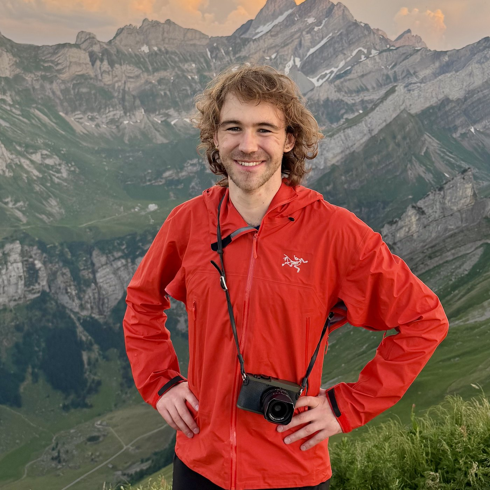

Dylan Moore

Hi there, you’ve found my website!
A bit about myself: I am a human-AI interaction researcher, startup founder, and ex-Google software engineer. I recently finished my PhD in Engineering and Masters of Engineering Management (MEM) at Dartmouth.
I defended my dissertation, Designing Narrative-Based AI Assistance for Sensemaking in Collaborative Environments: Case Studies in Education and Dementia Care in 2026.
Before starting my Ph.D, I helped create the “Super Thanks” fan funding feature at YouTube and was a software engineer at Lark Health. I graduated from Stanford University with a master’s and bachelor’s degree in computer science.
Please drop me a note if you’d like to talk. Thanks!